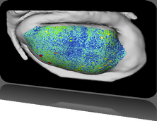

4th Symposium on Biological Data Visualization
11-12 July // Boston, MA @ ISMB
11-12 July // Boston, MA @ ISMB


BioVis 2014 is an official SIG of ISMB

BioVis 2014 Supporters
Platinum:

Silver:


We also acknowledge the support by BMC.